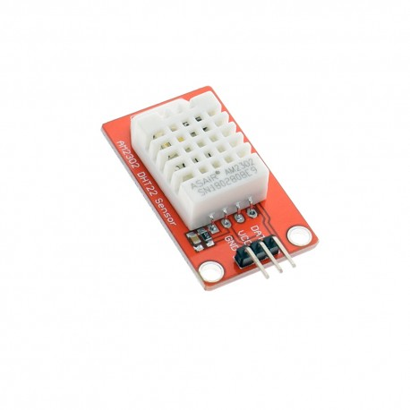
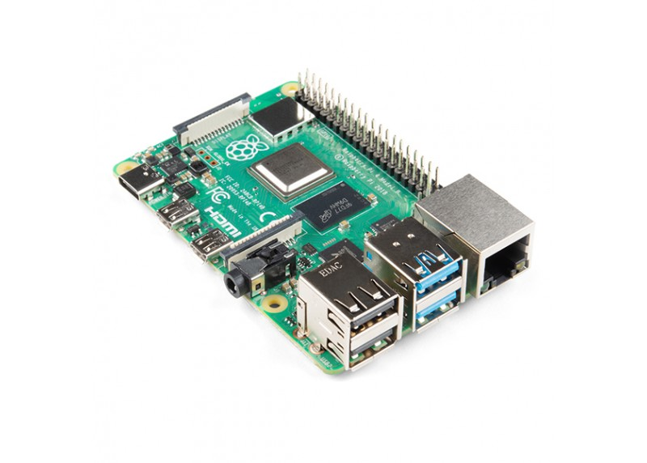

Stream del nido
Foto del nido
Materiales usados en la programación
- DHT22
 - Raspberry Pi 4 modelo b

Programa utilizado
Haga click en el siguiente enlace para ir a una página
con los datos de humedad y temperatura tanto dentro como
fuera del nido: datos del nido